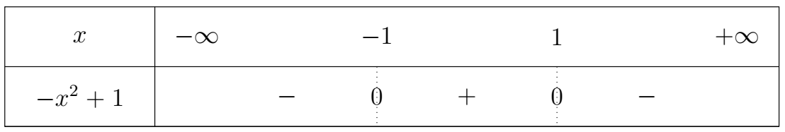
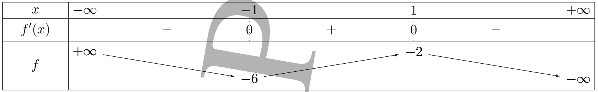
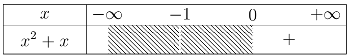
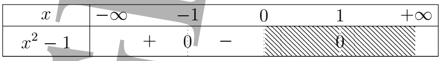

📝 Correction du devoir n°2 du 1er semestre
-
Déterminons une primitive $F$ de la fonction $f$ sur $I$.
-
$f(x) = (6x - 3)(4x^2 - 4x + 2)^3 \quad ; I = \mathbb{R}$(0,5pt)
$ \begin{aligned} f(x) &= (6x - 3)(4x^2 - 4x + 2)^3\\ &= 3(2x - 1)(4x^2 - 4x + 2)^3\\ &= 3\times \dfrac{1}{4}(8x - 4)(4x^2 - 4x + 2)^3\\ &= 3\times \dfrac{1}{4}(4x^2 - 4x + 2)'(4x^2 - 4x + 2)^3\\ &=3\times \dfrac{1}{4}u'u^{3} \end{aligned} $
$ \begin{aligned} F(x) &=3\times \dfrac{1}{4}\times \dfrac{1}{4}u^{4} +k\\ &= 3\times \dfrac{1}{4} \times \dfrac{1}{4} (4x^2 - 4x + 2)^4 +k\\ &= \dfrac{3}{16} (4x^2 - 4x + 2)^4 +k\\ \end{aligned} $
\[ \mathbf{F(x) = \dfrac{3}{16} (4x^2 - 4x + 2)^4}+k \] -
$f(x) = \dfrac{\sin x}{\sqrt{3 + \cos x}} \quad ; I = \mathbb{R}$(0,5pt)
$ \begin{aligned} f(x) &= \dfrac{\sin x}{\sqrt{3 + \cos x}}\\ &= \dfrac{-(3 + \cos x)'}{\sqrt{3 + \cos x}}\\ &= \dfrac{-(u)'}{\sqrt{u}}\\ \end{aligned} $
$ \begin{aligned} F(x) &= -2\sqrt{u}+k\\ &= -2\sqrt{3 + \cos x} +k \end{aligned} $
\[ \mathbf{F(x) = -2\sqrt{3 + \cos x} +k } \] -
$f(x) = 2\cos 3x - 3\sin 2x \quad ; I = \mathbb{R}$(0,5pt)
$ \begin{aligned} f(x) &= 2\cos 3x - 3\sin 2x\\ &= 2 \times \cos (ax+b) - 3 \times \sin (ax+b)\\ \end{aligned} $
$ \begin{aligned} F(x) &= 2 \times \dfrac{1}{a} \sin (ax+b) + 3 \times \dfrac{1}{a} \cos (ax+b)\\ &= 2 \times \dfrac{1}{3} \sin (3x) + 3 \times \dfrac{1}{2} \cos (2x)\\ &= \dfrac{2}{3} \sin (3x) + \dfrac{3}{2} \cos (2x)\\ \end{aligned} $
\[ \mathbf{F(x) = \dfrac{2}{3} \sin (3x) + \dfrac{3}{2} \cos (2x) +k } \] -
$f(x) = \dfrac{3x}{\sqrt{x^2 - 1}} + \sin x \sin 2x \quad ; I = ]-\infty; -1[$(0,5pt)
$ \begin{aligned} f(x) &= \dfrac{3x}{\sqrt{x^2 - 1}} + \sin x \sin 2x\\ &= \dfrac{3x}{\sqrt{x^2 - 1}} + \sin x \times \cos x \times \sin x\\ &= \dfrac{3x}{\sqrt{x^2 - 1}} + \cos x \times \sin^{2} x\\ &= \dfrac{3}{2}\dfrac{(x^2 - 1)'}{\sqrt{x^2 - 1}} +\dfrac{1}{3} (\sin^{3} x)'\\ &= \dfrac{3}{2}\dfrac{(u)'}{\sqrt{u}} +\dfrac{1}{n+1} (\sin^{n+1} x)'\\ \end{aligned} $
$ \begin{aligned} F(x) &= \dfrac{3}{2}\times 2\sqrt{u} +\dfrac{1}{3} \sin^{3} x + k\\ &= 3\sqrt{x^2 - 1} +\dfrac{1}{3} \sin^{3} x +k\\ \end{aligned} $
\[ \mathbf{F(x) = 3\sqrt{x^2 - 1} +\dfrac{1}{3} \sin^{3} x +k } \]
-
-
Soit $k$ la fonction définie sur $\mathbb{R} \setminus \{-2\}$ par : $k(x) = \dfrac{3x - 2}{(x+2)^3}$
-
Déterminons les $a$ et $b$ tels que $\forall x \in \mathbb{R} \setminus \{-2\}$, $k(x) = \dfrac{a}{(x+2)^2} + \dfrac{b}{(x+2)^3}$.(0,5pt)
$ \begin{aligned} k(x) &= \dfrac{a}{(x+2)^2} + \dfrac{b}{(x+2)^3}\\ &= \dfrac{a(x+2)}{(x+2)^3} + \dfrac{b}{(x+2)^3}\\ &= \dfrac{a(x+2)+b}{(x+2)^3}\\ &= \dfrac{ax+2a+b}{(x+2)^3}\\ \end{aligned} $
Par indentification $3x - 2 = ax+2a+b$
$ \begin{aligned} 3x - 2 = ax+2a+b & \implies \begin{cases} a = 3 \\ 2a+b = -2 \end{cases}\\ & \implies \begin{cases} a = 3 \\ 6+b = -2 \end{cases}\\ & \implies \begin{cases} a = 3 \\ b = -8 \end{cases}\\ \end{aligned} $
Donc $k(x) = \dfrac{3}{(x+2)^2} + \dfrac{-8}{(x+2)^3}$
\[ \mathbf{k(x) = \dfrac{3}{(x+2)^2} + \dfrac{-8}{(x+2)^3} +c } \] -
Déduisons-en la primitive $K$ de $k$ qui prend la valeur 2 en -3.(0,5 pt)
$ \begin{aligned} k(x) &= \dfrac{3}{(x+2)^2} + \dfrac{-8}{(x+2)^3}\\ &= 3\dfrac{1}{(x+2)^2} -8 \dfrac{1}{(x+2)^3}\\ &= 3\dfrac{1}{u^2} -8 \dfrac{1}{v^3}\\ &= 3\dfrac{1}{u^n} -8 \dfrac{1}{v^n}\\ \end{aligned} $
$ \begin{aligned} K(x) &= 3\dfrac{-1}{(n-1)u^{n-1}} -8 \dfrac{-1}{(n-1)v^{n-1}} + k\\ &= -3\dfrac{1}{(x+2)} +8 \dfrac{1}{2(x+2)^2} +k\\ &= -\dfrac{1}{(x+2)} +4 \dfrac{1}{(x+2)^2} +k\\ \end{aligned} $
\[ \mathbf{K(x) = -\dfrac{1}{(x+2)} + \dfrac{4}{(x+2)^2} + c } \] -
Résoulvons dans \( \mathbb{C} \) l’équation \( z^2 - (1 + i)z + i = 0 \).(0,5pt)
\( \Delta = -2i \)
Posons \( \Delta = \delta^2 \) avec \( \delta = x + yi \) et \( x, y \in \mathbb{R} \)
\( \delta^2 = \Delta \implies x^2 - y^2 + 2xyi = -2i. \) et $| \Delta | = 2$
Cela donne le système suivant :
\begin{align*} \begin{cases} x^2 + y^2 = | \Delta |, \\ x^2 - y^2 = 0, \\ 2xy = -2. \end{cases} &\implies \begin{cases} x^2 + y^2 = 2, \\ x^2 - y^2 = 0, \\ xy = -. \end{cases}\\&\implies \begin{cases} 2x^2 = 2, \\ 2y^2 = 2, \\ 2xy = -1. \end{cases}\\&\implies \begin{cases} x^2 = 1, \\ y^2 = 1, \\ xy = -1. \end{cases}\\&\implies \begin{cases} x = 1, x = -1 , \\ y = 1, y = -1 \\ xy = -1. \end{cases} \end{align*}
- Si \( x = 1 \), alors \( y = -1 \).
- Si \( x = -1 \), alors \( y = 1 \).
\( \delta_1 = 1 - i \quad \text{et} \quad \delta_2 = -1 + i. \)
Les solutions de l’équation quadratique sont données par : \(\displaystyle z = \dfrac{-b \pm \sqrt{\Delta}}{2a}. \)
-
Pour \( \delta_1 = 1 - i \) :
\(\displaystyle \begin{aligned} z_1 &= \frac{-(-1 - i) + (1 - i)}{2}\\ &= \frac{1 + i + 1 -i}{2}\\ &=\frac{2}{2} = 1. \end{aligned} \)
-
Pour \( \delta_2 = -1 + i \) :
\( \displaystyle \begin{aligned} z_2 &= \frac{-(-1 - i) - (-1 + i)}{2}\\ &= \frac{1 + i - (-1 + i)}{2}\\ &= \frac{1 + i + 1 - i}{2}\\ &= \frac{2i}{2} = i \end{aligned} \)
Résultat final :
Les solutions de \( z^2 - (1 + i)z + i = 0 \) sont :
\( z_1 = 1 \quad \text{et} \quad z_2 = i. \)
\[ \mathbf{ S = \{ 1,i \} } \]
-
-
Écrivons le complexe $z = -1 + i\sqrt{3}$ sous forme trigonométrique puis sous forme exponentielle. (0,5 pt)
$z = -1 + i\sqrt{3}\implies z = 2\left( -\dfrac{1}{2} + \dfrac{\sqrt{3}}{2} i \right) $
-
Forme trigonométrique
$z = 2\left[ \cos \left(\dfrac{2\pi}{3}\right) + i\sin \left(\dfrac{2\pi}{3}\right) \right]$
-
Forme exponentielle
$z = 2e^{i\dfrac{2\pi}{3}}$
\[ \mathbf{ z = 2e^{i\dfrac{2\pi}{3}} } \]
\[\displaystyle \mathbf{ z = 2\left[ \cos \left(\dfrac{2\pi}{3}\right) + i\sin \left(\dfrac{2\pi}{3}\right) \right] } \] -
-
Donnons le module et un argument de $\displaystyle z = (1 - \sqrt{2})e^{i\dfrac{\pi}{4}}$.(0,5 pt)
-
Module
$|z| = (1 - \sqrt{2})$
\[ \mathbf{ |z| = (1 - \sqrt{2}) } \] -
Argument
$\arg(z) = \frac{\pi}{4}[2\pi]$
\[ \mathbf{ \arg(z) = \frac{\pi}{4}[2\pi] } \]
-
-
Donnons le module et un argument de $z_1 = \dfrac{\sqrt{6}-i\sqrt{2}}{2}$ et $z_2 = 1 - i$.(1pt)
\begin{align*} z_1 = \dfrac{\sqrt{6}-i\sqrt{2}}{2} &\implies z_1 = \sqrt{2} \left( \dfrac{\sqrt{3}}{2}-\dfrac{1}{2}i \right)\\ &\implies z_1 = \sqrt{2} \left[ \cos\left( -\frac{\pi}{6} \right) + i \sin\left( -\frac{\pi}{6} \right) \right] \end{align*}- pour $z_1$
-
Module
$|z_1|= \sqrt{2}$
\[ \mathbf{ |z_1|= \sqrt{2} } \] -
Argument
$\arg(z_1) = -\frac{\pi}{6}[2\pi]$
\[ \mathbf{ \arg(z_1) = -\frac{\pi}{6}[2\pi] } \] - pour $z_2$
-
Module
$|z_2|= \sqrt{2}$
\[ \mathbf{ |z_2|= \sqrt{2} } \] -
Argument
$\arg(z_2) = -\frac{\pi}{4}[2\pi]$
\[ \mathbf{ \arg(z_2) = -\frac{\pi}{4}[2\pi] } \]
-
Déduisons le module et un argument de chacun des complexes $u = \dfrac{z_1}{z_2}$ et $u^5$.(1pt)
- pour $u$
-
Module
$|u|=\dfrac{|z_1|}{|z_2|}= 1$
\[ \mathbf{ |u|= 1 } \] -
Argument
$ \begin{aligned} \arg(u) = \arg\left( \dfrac{z_1}{z_2} \right) &\implies \arg(u) =\arg(z_1)-\arg(z_2) \\ &\implies \arg(u) =-\dfrac{\pi}{6}-\left( -\dfrac{\pi}{4} \right) [2\pi]\\ &\implies \arg(u) =-\dfrac{\pi}{6}+\dfrac{\pi}{4} [2\pi]\\ &\implies \arg(u) =\dfrac{\pi}{12} [2\pi]\\ \end{aligned} $$\arg(u) =\dfrac{\pi}{12} [2\pi]$
\[ \mathbf{ \arg(u) =\dfrac{\pi}{12} [2\pi] } \] - pour $u^5$
-
Module
$|u^5|= 1$
-
Argument
$ \begin{aligned} \arg(u^{5}) &= 5\arg(u)\\ &=\frac{5\pi}{12} [2\pi] \end{aligned} $\[ \mathbf{ \arg(u^{5}) =\frac{5\pi}{12} [2\pi] } \]
-
Déduis en les valeurs exactes de $\cos\left(\frac{\pi}{12}\right)$ et $\sin\left(\frac{\pi}{12}\right)$.(1pt)
On a :
\(\begin{aligned} u&=e^{i\frac{\pi}{12}}\\ &=\cos\left(\frac{\pi}{12}\right) +i\sin\left(\frac{\pi}{12}\right). \end{aligned}\)
Or :
\[ \begin{aligned} u=\frac{z_1}{z_2} &= \frac{\dfrac{\sqrt{6}-i\sqrt{2}}{2}}{1-i} \\[4pt] &= \frac{\sqrt{6}-i\sqrt{2}}{2(1-i)} \\[4pt] &= \frac{\sqrt{6}-i\sqrt{2}}{2(1-i)} \cdot \frac{1+i}{1+i} \\[4pt] &= \frac{(\sqrt{6}-i\sqrt{2})(1+i)}{2(1+1)} \\[4pt] &= \frac{\sqrt{6}+\sqrt{2} + i(\sqrt{6}-\sqrt{2})}{4} \end{aligned} \]\[ \mathbf{ \cos\left(\frac{\pi}{12}\right)=\frac{\sqrt{6}+\sqrt{2}}{4} \textbf{ et } \sin\left(\frac{\pi}{12}\right)=\frac{\sqrt{6}-\sqrt{2}}{4}} \]
On note $(C_f)$ la courbe représentative de la fonction $f$ dans un repère orthonormé direct $(O;\vec{i},\vec{j})$ d'unité $1cm$ avec
$$ f(x) = \begin{cases} \dfrac{x^3 - 2x^2}{x^2 - 1} & \text{; si } x \leq 0 \\ x + \sqrt{x^2 + x} & \text{; si } x > 0 \end{cases} $$
Soit $g$ la fonction numérique définie par : $g(x) = -x^3 + 3x - 4$.
-
Étudions les variations de $g$ puis dressons son tableau de variations.
$ \begin{aligned} g'(x) &= -3x^2 + 3\\ \end{aligned} $
$ \begin{aligned} g'(x) = 0 &\implies -3x^2 + 3 = 0\\ &\implies -x^2 + 1 = 0\\ &\implies x=-1 \textbf{ ou } x=1\\ \end{aligned} $

Sur $]-\infty ; -1] \cup [1;+\infty[$ $g'(x) \leq 0$ donc g est décroissant
Sur $[-1 ; 1]$ $g'(x) \geq 0$ donc g est croissant
Limites
$ \begin{aligned} \lim\limits_{x \to -\infty}g(x)&=\lim\limits_{x \to -\infty}-x^3 + 3x - 4\\ &=\lim\limits_{x \to -\infty}-x^3\\ &=+\infty \end{aligned} $
$ \begin{aligned} \lim\limits_{x \to +\infty}g(x)&=\lim\limits_{x \to +\infty}-x^3 + 3x - 4\\ &=\lim\limits_{x \to +\infty}-x^3\\ &=-\infty \end{aligned} $
$ \begin{aligned} g(-1) &= -(-1)^3 + 3(-1) - 4\\ g(-1) &= 1 -3 - 4\\ &=-6 \end{aligned} $
$ \begin{aligned} g(1) &= -(1)^3 + 3(1) - 4\\ g(1) &= -1 +3 - 4\\ &=-2 \end{aligned} $

-
- Montrons que l'équation $g(x)=0$ admet une unique solution $\alpha \in
\mathbb{R}$.(0,5 pt)
Existance
D'après le tableau de vairation $\lim\limits_{x \to -\infty}g(x) \times g(-1) < 0 $ d'où l'existance d'une solution
Unicité
$g$ est continue et strictement décroissant de $]-\infty , -1[$ vers $]+\infty , -6[$ d'où l'unicité de la solution
-
Donnons un encadrement de $\alpha$ à $10^{-1}$. (0,5pt)
On sait que la solution unique $\alpha$ vérifie $\alpha<-1$.< /p>
Calculons $g(x)=-x^3+3x-4$ pour deux valeurs décimales consécutives.
\( \begin{aligned} g(-2)&= -(-8)+3(-2)-4\\ &= 8-6-4 \\ &= -2 < 0 \end{aligned} \)
\( \begin{aligned} g(-1{,}5)&= -(-3{,}375)+3(-1{,}5)-4\\ &= 3{,}375-4{,}5-4\\ &=-5{,}125 < 0 \end{aligned}\)
On cherche donc plus à gauche.
\( \begin{aligned} g(-2{,}1)&= -(-9{,}261)+3(-2{,}1)-4 \\ &= 9{,}261-6{,}3-4 \\ &= -1{,}039 < 0 \end{aligned} \)
\( \begin{aligned} g(-2{,}2)&=-(-10{,}648)+3(-2{,}2)-4\\ &= 10{,}648-6{,}6-4\\ &=0{,}048 > 0 \end{aligned} \)
La fonction $g$ est continue et strictement décroissante sur $]-\infty,-1]$, donc elle change de signe une seule fois sur cet intervalle.
Encadrement à $10^{-1}$ :
\[ \boxed{-2{,}2 < \alpha < -2{,}1} \]
- Montrons que l'équation $g(x)=0$ admet une unique solution $\alpha \in
\mathbb{R}$.(0,5 pt)
-
En déduire le signe de $g(x)$ sur $]-\infty; 0]$.
\( \begin{aligned} g(x)>0 & \text{ si } x\in ]-\infty,\alpha[ \\ g(x)=0 & \text{ si } x=\alpha \\ g(x)<0 & \text{ si } x \in ]\alpha,0] \end{aligned} \)
-
Déterminons l'ensemble de définition $D_f$ de $f$.(0,5pt)
$$ f(x) = \begin{cases} \dfrac{x^3 - 2x^2}{x^2 - 1} & \text{; si } x \leq 0 \\[3mm] x + \sqrt{x^2 + x} & \text{; si } x > 0 \end{cases} $$
$$\text{ Posons } f(x) = \begin{cases} f_{1}(x) & \text{; si } x \leq 0 \\[3mm] f_{2}(x) & \text{; si } x > 0 \end{cases}$$
-
$f_{1}$
$ \begin{aligned} f_{1} \quad &\exists \quad \text{ ssi } x^2 - 1 \neq 0 &\text{ et }& x \leq 0\\[3mm] & x \neq -1 \text{ et } x \neq -1 &\text{ et }& x \in ]-\infty,0] \\[3mm] & -1 \in ]-\infty,0] &\text{ et }& 1 \notin ]-\infty,0] \end{aligned} $
$\underline{Df_{1} = ]-\infty ; -1[ \cap ]-1 ; 0[}$
-
$f_{2}$
$ f_{2} \quad \exists \quad$ ssi $x^2 + x \geq 0 $ et $x > 0$
Posons $x^2 + x = 0 $
$x^2 + x = 0 \implies x=0 \textbf{ ou } x=-1$

$\underline{Df_{2} = ]0 ; +\infty[}$
Donc
$\quad \begin{aligned} Df & = Df_{1} \cup Df_{2} \\ & = ]-\infty ; -1[ \cap ]-1 ; 0[ \cup ]0 ; +\infty[\\ &=\mathbb{R}\setminus \{-1\} \end{aligned} $
\[ \mathbf{Df = \mathbb{R}\setminus \{-1\} } \]
-
-
Calculons les limites de $f$ aux bornes de $D_f$ et déduisons-en l'existence d'une asymptote dont on précisera. (1pt+0,25pt)
-
-
Calculons les limites de $f$ aux bornes de $D_f$
-
$\underline{\text{En } -\infty}: f(x)=f_{1}(x)$
\( \begin{aligned} \lim\limits_{x \to -\infty} f(x) &= \lim\limits_{x \to -\infty} \dfrac{x^3 - 2x^2}{x^2 - 1}\\ &= \lim\limits_{x \to -\infty} \dfrac{x^3}{x^{2}}\\ &= \lim\limits_{x \to -\infty} x\\ &= -\infty \end{aligned} \)
\[ \mathbf{\lim\limits_{x \to -\infty} f(x) = -\infty } \] -
$\underline{\text{En } +\infty}: f(x)=f_{2}(x)$
\( \begin{aligned} \lim\limits_{x \to +\infty} f(x) &= \lim\limits_{x \to +\infty} x + \sqrt{x^2+x}\\ &= \lim\limits_{x \to +\infty} x + \sqrt{x^2+x}\\ &= +\infty \end{aligned} \)
\[ \mathbf{\lim\limits_{x \to +\infty} f(x) = +\infty } \] -
$\underline{\text{En } -1^{-}}: f(x)=f_{1}(x)$
\( \begin{aligned} \lim\limits_{x \to -1^{-}} f(x) &= \lim\limits_{x \to 1^{-}} \dfrac{x^3 - 2x^2}{x^2 - 1}\\ &= "\dfrac{-3}{0}"\\ &= \dfrac{-3}{0^{+}}\\ &= -\infty \end{aligned} \)

\[ \mathbf{\lim\limits_{x \to -1^{-}} f(x) =-\infty } \] -
$\underline{\text{En } -1^{+}}: f(x)=f_{1}(x)$
\( \begin{aligned} \lim\limits_{x \to -1^{+}} f(x) &= \lim\limits_{x \to 1^{+}} \dfrac{x^3 - 2x^2}{x^2 - 1}\\ &= \dfrac{-3}{0^{-}}\\ &= +\infty \end{aligned} \)
\[ \mathbf{\lim\limits_{x \to -1^{+}} f(x) =+\infty } \]
-
-
éduisons-en l'existence d'une asymptote dont on précisera.(0,25pt)
Comme $\lim\limits_{x \to -1} f(x) = \infty$ donc $x=-1$ est une asymptote verticale
\[ \mathbf{ \text{Donc } x = -1 \text{ est une asymptote verticale à } (\mathcal{C}_f) } \]
-
-